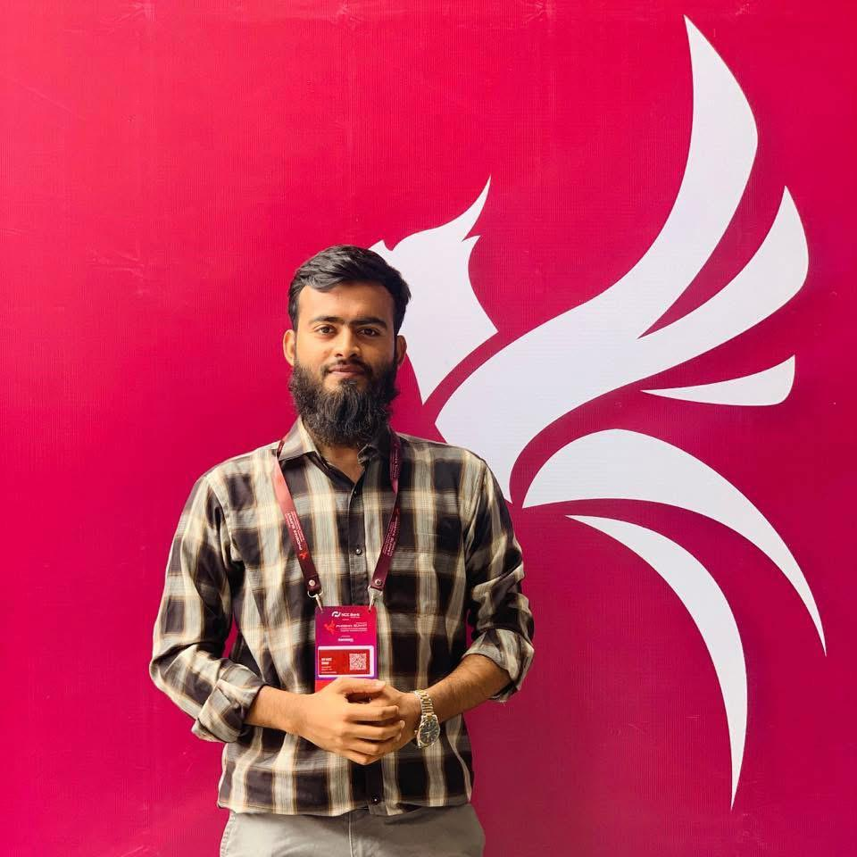

I'm an Infrastructure & Network Operations Engineer at Huawei Technologies Bangladesh, where I monitor and support Huawei 5G Core platforms to keep telecom services available and stable around the clock.
My background spans Linux administration (RHCSA), enterprise networking, and virtualization, with a growing foundation in AWS and Huawei FusionCloud. I am currently pursuing an MSc in IT System Security while working toward a long-term career in cloud engineering.
Huawei Technologies Bangladesh | Network Operations Center Engineer (L1)
(Feb 2026 — Present)
Monitoring and supporting Huawei 5G Core platforms (UDM, AAA, ENUM, iMaster MAE), tracking system alarms, and coordinating incident resolution in a live 24x7 telecom environment.
Amber IT Ltd | Assistant Network Engineer — RF
(Oct 2025 — Feb 2026)
Assisted in RF planning, microwave radio installation, spectrum analysis, and troubleshooting interference issues for enterprise PTP/PTMP connections.